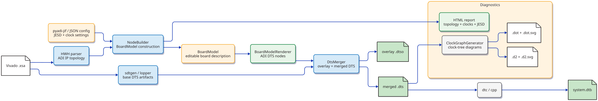
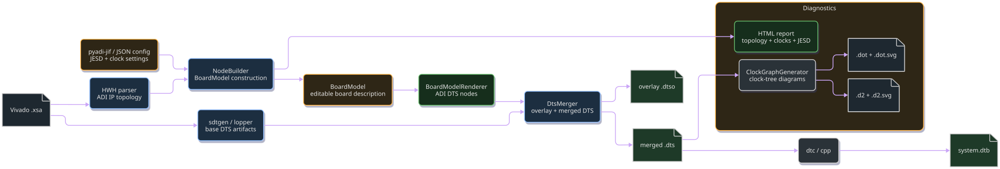
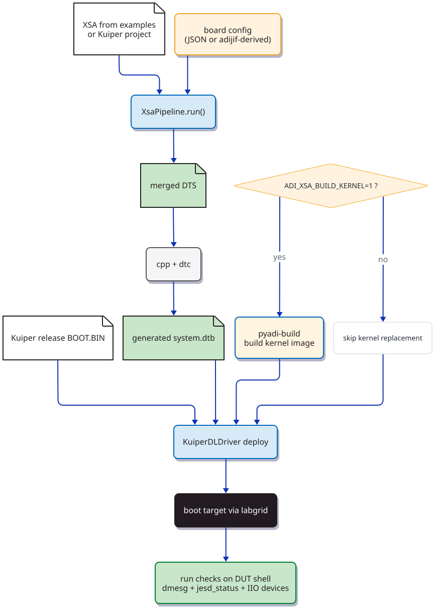
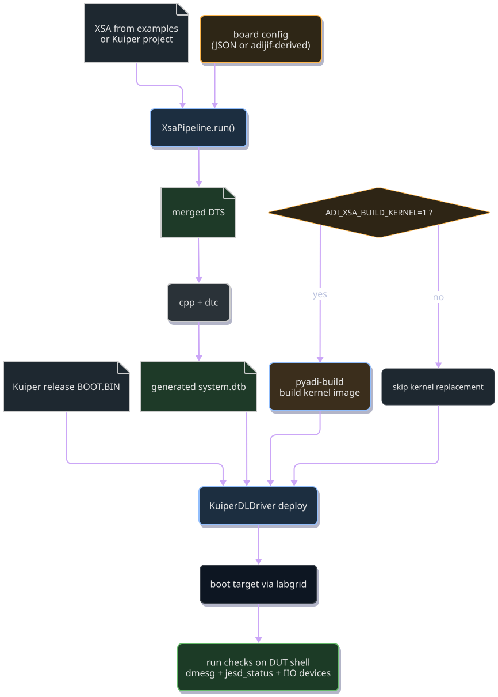
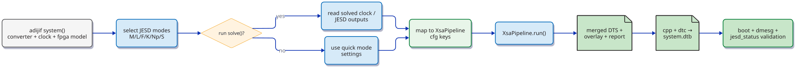
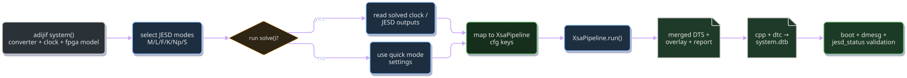

XSA to Device Tree
The adidt.xsa subpackage converts Vivado .xsa archives into Linux
Device Tree sources for ADI JESD204 FSM-framework designs.
Overview
The pipeline performs five stages:
SDT generation – invokes
lopper(sdtgen) as a subprocess to produce a base System Device Tree from the.xsa.XSA parsing – extracts the Vivado hardware handoff (
.hwhXML) from the.xsaZIP and detects ADI AXI IPs (JESD204 controllers, clock generators, converters).Node building – each board builder constructs a
BoardModel(see Board Model) from the XSA topology and config, then renders it to DTS node strings via Jinja2 templates. TheBoardModelis editable before rendering — callers can modify clock dividers, JESD parameters, or GPIO mappings programmatically.DTS merging – inserts the rendered nodes into the base DTS, producing both a standalone overlay (
.dtso) and a fully merged (.dts).HTML visualization – generates a self-contained interactive report with D3.js topology, clock tree, and JESD204 parameter panels.
Clock graph – parses
clocks/clock-names/clock-output-namesproperties from the merged DTS and writes directed clock-distribution graphs in Graphviz DOT and D2 formats (SVG rendered automatically whendot/d2are available on PATH).
Pipeline diagram
{kind=link}

{kind=link}

Base DTS and Overlay Structure
The pipeline produces two output files: a merged DTS (.dts) and a
standalone overlay (.dtso). Understanding what each contains — and
what the base DTS from sdtgen provides — is important when debugging boot
failures or integrating with custom HDL designs.
Base DTS (from sdtgen / lopper)
sdtgen generates a System Device Tree from the .hwh hardware handoff
inside the .xsa archive. The base includes:
The root
/node with board and FPGA part identifiers.The
amba_plbus (simple-bus) containing every AXI IP in the Vivado block design — JESD204 controllers, DMA engines, SPI controllers, UART, Ethernet, GPIO, timer, interrupt controller, clock generators, transceivers, and memory controllers.Each IP node has
compatible = "xlnx,...",reg,interrupts, and Xilinx-specific properties (xlnx,ip-name,xlnx,num-lanes, etc.) derived from the HWH.CPU and memory nodes (
cpus,memory@...),chosenwithstdout-pathandbootargs, andaliasesfor serial/SPI/I2C.Clock infrastructure: fixed-clock nodes and
clk_bus_0providing the AXI bus clock.For MicroBlaze designs: the
address-mapproperty on the CPU node listing all accessible peripherals.
The base DTS nodes use Xilinx generic compatible strings
(xlnx,axi-jesd204-rx-1.0, xlnx,axi-dmac-1.0, etc.) and lack
ADI-driver-specific properties. The kernel can parse these nodes but
ADI drivers will not probe without the correct adi,... compatible and
configuration properties.
What the pipeline adds (overlay / merged nodes)
The NodeBuilder renders ADI-specific DTS content that either replaces
or augments nodes from the base:
New nodes (inserted into the bus):
AXI clock generators —
adi,axi-clkgen-2.00.anodes with#clock-cells,clock-output-names, and bus clock references.Fixed clocks — e.g.
clkin_125for external reference oscillators not described in the HWH.
New SPI device child nodes:
Clock chips — HMC7044 (
adi,hmc7044), AD9523-1 (adi,ad9523-1), or AD9528 (adi,ad9528) with PLL, VCXO, channel dividers, and JESD204 sysref-provider configuration.PLLs — ADF4382 (
adi,adf4382) for converter device clocks.Converters — AD9084 (
adi,ad9084), AD9081 (adi,ad9081), AD9680, AD9144, ADRV9009, etc., with JESD204 link parameters, firmware names, lane mappings, and GPIO connections.
These appear inside &spi_bus { ... } overlay blocks that add children
to the SPI controller nodes already present in the base.
Overlay property additions (&label { ... } blocks):
DMA engines — adds
adi,axi-dmac-1.00.acompatible and#dma-cellsto the existing DMA nodes.ADXCVR transceivers — adds
adi,axi-adxcvr-1.0compatible,adi,sys-clk-select,adi,out-clk-select, clock references, and JESD204 input chain links.JESD204 controllers — adds
adi,axi-jesd204-rx-1.0(or-tx-),adi,octets-per-frame,adi,frames-per-multiframe, and the fulljesd204-device/jesd204-inputsFSM framework properties.TPL cores — adds
adi,axi-ad9081-rx-1.0(or board-specific variant), DMA links, and converter associations.HSCI — adds
adi,axi-hsci-1.0.aand interface speed for high-speed converter interface blocks.
Board fixups (applied to the base before merging):
Some base DTS nodes require corrections that sdtgen cannot derive from
the HWH alone. The board_fixups.py registry applies platform-specific
patches — for example, VCU118 Ethernet PHY configuration and IIO device
name normalization.
Assumptions about the base DTS
The pipeline expects the sdtgen-generated base to provide:
An
amba_pl(oramba) bus node as the top-level container.Labeled nodes for every AXI IP that the overlay will reference (
axi_apollo_rx_dma,axi_apollo_rx_xcvr, etc.). The labels are derived from the Vivado block design instance names.A
clk_bus_0fixed-clock node providing the AXI bus clock frequency.Correct
#address-cellsand#size-cellson the bus (1 for MicroBlaze/VCU118, 2 for ZynqMP/ZCU102).For MicroBlaze: a
cpusnode,memorynode withdevice_type, andchosenwithbootargs = "earlycon"andstdout-pathpointing to the UART. TheSdtgenRunnerapplies fixups to ensure these are present.
If the XSA comes from an ADI HDL reference design, these assumptions hold automatically. Custom designs must follow the same naming conventions for the overlay labels to resolve.
Merged vs overlay output
The merged DTS (
.dts) combines the base and overlay into a single file with#include "pl.dtsi"for the base, followed by the generated ADI nodes and&label { ... }augmentations. Compile it withcpp + dtcto produce a standalone DTB.The overlay (
.dtso) is a/plugin/;file that can be applied at runtime viadtoverlayon systems that support dynamic DT overlays. It contains the same ADI nodes but uses&amba_pl { ... }to target the bus node.
For MicroBlaze simpleImage targets, use the merged DTS — overlays
require a base DTB that the bootloader applies the overlay to, which
MicroBlaze’s direct-boot flow does not support.
Hardware Test Flow
The hardware tests can optionally build and inject a kernel image with
pyadi-build while still using the DTB generated from the XSA pipeline.
{kind=link}

{kind=link}

Example hardware invocation:
source /tools/Xilinx/2025.1/Vivado/settings64.sh
LG_ENV=/jenkins/lg_ad9081_zcu102.yaml ADI_XSA_BUILD_KERNEL=1 \
pytest -q test/hw/ad9081/test_ad9081_xsa_hw_m4_l8.py
Installation
The XSA pipeline requires lopper (the Xilinx System Device Tree
generator). Install the optional dependency group:
pip install "adidt[xsa]"
Usage
Start with the step-by-step tutorial before tuning profiles:
python examples/xsa/adrv9009_zcu102.py --xsa /path/to/design.xsa
or use the full-page tutorial at XSA Flow Tutorials and the adijif-focused guide XSA + adijif Tutorial.
Run the pipeline from the CLI:
adidtc xsa2dt -x design.xsa -c config.json -o out/
Select an explicit board profile (optional):
adidtc xsa2dt -x design.xsa -c config.json --profile ad9081_zcu102 -o out/
Generate manifest parity reports from a reference DTS root:
adidtc xsa2dt -x design.xsa -c config.json -o out/ \
--reference-dts zynqmp-zcu102-rev10-ad9081-m8-l4.dts
Enable strict parity mode to fail generation when required roles are missing:
adidtc xsa2dt -x design.xsa -c config.json -o out/ \
--reference-dts zynqmp-zcu102-rev10-ad9081-m8-l4.dts \
--strict-parity
List available built-in profiles:
adidtc xsa-profiles
Show one profile and its defaults:
adidtc xsa-profile-show ad9081_zcu102
Built-in profiles
Profile |
Converter Family |
Platform |
JESD in Profile |
Board Config Key |
|---|---|---|---|---|
|
AD9081 MxFE |
ZCU102 |
No (supply via cfg) |
|
|
AD9081 MxFE |
ZC706 |
No (supply via cfg) |
|
|
AD9081 MxFE |
VPK180 |
Yes (JESD204C M8/L8) |
|
|
AD9082 MxFE |
ZCU102 |
No (supply via cfg) |
|
|
AD9083 MxFE |
ZCU102 |
No (supply via cfg) |
|
|
AD9084 |
VCU118 |
Yes |
|
|
AD9172 DAC |
ZCU102 |
Yes |
|
|
ADRV9009 |
ZCU102 |
No (supply via cfg) |
|
|
ADRV9009 |
ZC706 |
No (supply via cfg) |
|
|
ADRV9025 |
ZCU102 |
No (supply via cfg) |
|
|
ADRV9008 |
ZCU102 |
No (supply via cfg) |
|
|
ADRV9008 |
ZC706 |
No (supply via cfg) |
|
|
ADRV937x |
ZCU102 |
No (supply via cfg) |
|
|
ADRV937x |
ZC706 |
No (supply via cfg) |
|
|
ADRV9002 |
ZC706 |
No (supply via cfg) |
— |
|
FMCDAQ2 |
ZCU102 |
No (supply via cfg) |
|
|
FMCDAQ2 |
ZC706 |
No (supply via cfg) |
|
|
FMCDAQ3 |
ZCU102 |
Yes |
|
|
FMCDAQ3 |
ZC706 |
Yes |
|
|
FMCDAQ3 |
VCU118 (MicroBlaze) |
Yes |
|
Profiles with “JESD in Profile = Yes” include default JESD framing
parameters (F, K, M, L, Np, S) and can be used with cfg={} — no user
config needed. Profiles with “No” require JESD parameters to be supplied
via the cfg dict, typically from a pyadi-jif solver or manual
configuration.
Profile discovery
Use the CLI to browse profiles without reading JSON files directly:
adidtc xsa-profiles # list all available profiles
adidtc xsa-profile-show ad9081_zcu102 # show defaults as JSON
The MCP server exposes the same data via list_xsa_profiles() and
show_xsa_profile().
Reference DTS parity checking
When migrating from a hand-written DTS or validating against a known-good reference (e.g. the Kuiper release DTS), the pipeline can compare the generated output against a reference and report missing roles, links, and properties.
adidtc xsa2dt -x design.xsa -c config.json -o out/ \
--reference-dts zynqmp-zcu102-rev10-ad9081-m8-l4.dts
This produces a _map.json and _coverage.json alongside the DTS
output showing which driver requirements from the reference are present
in the generated tree.
Add --strict-parity to fail the pipeline when required roles or
properties are missing — useful in CI to prevent regressions:
adidtc xsa2dt -x design.xsa -c config.json -o out/ \
--reference-dts ref.dts --strict-parity
The parity checker extracts a driver manifest from the reference DTS:
required IIO device roles, phandle links (clocks, JESD204 inputs), and
property values. It then verifies each requirement against the generated
merged DTS. Any gaps appear in the coverage report and, with
--strict-parity, raise a ParityError.
Or call the pipeline directly from Python:
from pathlib import Path
from adidt.xsa.pipeline import XsaPipeline
import json
cfg = json.loads(Path("config.json").read_text())
results = XsaPipeline().run(
xsa_path=Path("design.xsa"),
cfg=cfg,
output_dir=Path("out/"),
)
print(results["merged"]) # Path to the merged .dts
print(results["report"]) # Path to the HTML visualization
print(results["clock_dot"]) # Path to the Graphviz clock-tree .dot
print(results["clock_d2"]) # Path to the D2 clock-tree .d2
# SVG paths are present only when the rendering tool is installed:
# results["clock_dot_svg"], results["clock_d2_svg"]
PetaLinux integration
The XSA pipeline can generate PetaLinux-ready system-user.dtsi files.
See PetaLinux Integration for the full workflow, diagrams, and
troubleshooting guide.
Quick example:
adidtc xsa2dt -x design.xsa -c cfg.json --format petalinux \
--petalinux-project /path/to/myproject
Python API
Core classes and methods used in the XSA flow:
API |
Purpose |
|---|---|
|
Extracts |
|
Dispatches to board builders, each constructing a |
|
Renders a |
|
Produces |
|
Writes self-contained HTML debug report with topology and clock links. |
|
Parses clock properties from the merged DTS and writes |
|
Orchestrates all stages end-to-end and returns artifact paths. |
XsaPipeline.run argument reference
Argument |
Type |
Description |
|---|---|---|
|
|
Vivado hardware handoff archive (must contain one |
|
|
Runtime configuration (JESD, clock labels/channels, board overrides). |
|
|
Output folder for base SDT, overlay/merged DTS, and report artifacts. |
|
|
Timeout (seconds) for SDT generation subprocess. |
|
|
Optional explicit built-in/custom profile name. |
|
|
Optional DTS root for manifest-parity checks and coverage artifacts. |
|
|
If true, raises |
|
|
When |
|
|
When |
|
|
When |
|
|
When |
|
|
|
Tip
The cfg argument accepts either a plain dict or a
PipelineConfig object. PipelineConfig.from_dict(d) provides
typed access to JESD, clock, and board-specific settings with
auto-detection of board config keys. See
PipelineConfig in the API reference.
Using adijif (pyadi-jif) With the XSA Flow
The intended integration is:
Use
adijifto select/solve JESD and clock settings.Translate solved values into
cfgkeys expected byXsaPipeline.Run
XsaPipelinewith either explicit profile or auto-profile.Compile the generated merged DTS to DTB and deploy/test on hardware.
adijif integration workflow
{kind=link}

{kind=link}

adijif-to-config mapping
adijif output |
|
|---|---|
RX JESD |
|
TX JESD |
|
RX device clock source choice |
|
TX device clock source choice |
|
HMC/clock output channel for RX |
|
HMC/clock output channel for TX |
|
Board wiring specifics (SPI/CS/GPIO/link IDs) |
|
Reference implementation
Use the ADRV9009 example for a complete adijif-driven flow:
examples/xsa/adrv9009_zcu102.py
For ADRV9025 ZCU102 XSA flows (Kuiper/local XSA), use:
examples/xsa/adrv9025_zcu102.py
The script demonstrates both quick-mode JESD extraction and optional
solve() usage, then feeds those values directly into XsaPipeline.
You can also pass profile="ad9081_zcu102" (or another built-in profile) to
XsaPipeline.run(). If no profile is passed, the pipeline will auto-select a
matching profile when available (for example, ad9081_zcu102).
For AD9082 Kuiper projects, prefer explicit profile selection:
profile="ad9082_zcu102". AD9081/AD9082 designs often share mxfe JESD
instance names, so topology-only auto-inference is ambiguous.
For AD9083 Kuiper projects, prefer explicit profile selection:
profile="ad9083_zcu102" for the same reason (shared mxfe naming).
For AD9081 ZC706 Kuiper projects, use:
profile="ad9081_zc706".
For AD9172 Kuiper projects, use explicit profile selection:
profile="ad9172_zcu102". XSA provides JESD/clock transport topology while
SPI-attached DAC/clock chip details require board-specific overlays.
Auto-selection also covers FMCDAQ2 variants:
fmcdaq2_zcu102(ZynqMP/ZCU102)fmcdaq2_zc706(Zynq-7000/ZC706)
FMCDAQ3 variants are available via explicit profiles:
fmcdaq3_zcu102(ZynqMP / ZCU102)fmcdaq3_zc706(Zynq-7000 / ZC706)fmcdaq3_vcu118(MicroBlaze / VCU118)
Current FMCDAQ3 support focuses on JESD/clock transport defaults and artifact
generation; board-specific SPI device overlay content remains to be extended.
The VCU118 variant ships with a coordinator-based boot smoke test
(test/hw/test_fmcdaq3_vcu118_hw.py) that drives the prebuilt Kuiper
simpleImage.vcu118_fmcdaq3.strip over JTAG via BootFabric.
ADRV family profile variants include:
adrv9008_zcu102adrv9008_zc706adrv9002_zc706adrv9009_zc706adrv9009_zcu102adrv937x_zc706adrv937x_zcu102adrv9025_zcu102(also selected fromadrv9026-named JESD labels)
The adrv9009_zcu102 profile also supports the AD-FMCOMMS8-EBZ
(FMComms8) dual-chip design. When the XSA topology is detected as
FMComms8 layout (two ADRV9009 transceivers sharing one SPI bus), the
pipeline generates a second PHY node (trx1_adrv9009) with independent
HMC7044 channel assignments per chip:
trx0 (
adrv9009-x2): uses HMC7044 channels 0/1 (dev/sysref) and 6 (FPGA sysref)trx1 (
adrv9009): uses HMC7044 channels 2/3 (dev/sysref) and 7 (FPGA sysref)
Hardware tests verify that both adrv9009-phy IIO devices appear in
the IIO context.
For ADRV9008 Kuiper projects, prefer explicit profile selection:
profile="adrv9008_zcu102". Many ADRV9008 XSAs use ADRV9009-style JESD/IP
instance names, which makes converter-family auto-inference ambiguous.
AD9084 (Apollo) VCU118 MicroBlaze support
The pipeline supports AD9084 “apollo” dual-link designs on VCU118 (MicroBlaze). These designs feature four JESD204C links (RX A/B + TX A/B) with separate XCVR, DMA, and TPL cores per link. The board builder generates nodes for:
ADF4382 PLL (reference clock for AD9084 dev_clk)
HMC7044 clock distributor (JESD reference clocks, SYSREF)
HSCI high-speed connector interface
JESD204 overlay nodes with 4-clock config (s_axi_aclk, link_clk, device_clk, lane_clk) and per-link device clock from HMC7044 channels
AD9084 converter node with profile firmware, lane mappings, and HSCI
The built-in ad9084_vcu118 profile encodes the AD9084-EBZ board wiring
for the HMC7044 + AD9084 + ADF4382 combination. When the pipeline sees an
AD9084 design on VCU118 it now auto-applies those defaults unless the caller
overrides them explicitly.
Configuration uses the ad9084_board key with JESD204 link IDs from
dt-bindings/iio/adc/adi,ad9088.h:
cfg = {
"jesd": {
"rx": {"F": 6, "K": 32, "M": 4, "L": 8, "Np": 12, "S": 1},
"tx": {"F": 6, "K": 32, "M": 4, "L": 8, "Np": 12, "S": 1},
},
"clock": {
"rx_device_clk_label": "hmc7044",
"rx_device_clk_index": 8,
"tx_device_clk_label": "hmc7044",
"tx_device_clk_index": 9,
"rx_b_device_clk_index": 11,
"tx_b_device_clk_index": 12,
},
"ad9084_board": {
"converter_spi": "axi_spi_2",
"converter_cs": 0,
"clock_spi": "axi_spi",
"hmc7044_cs": 1,
"adf4382_cs": 0,
"dev_clk_ref": "adf4382 0",
"dev_clk_scales": "1 10",
"firmware_name": "204C_M4_L8_NP16_1p25_4x4.bin",
"reset_gpio": 62,
"rx_a_link_id": 4, # FRAMER_LINK_A0_RX
"rx_b_link_id": 6, # FRAMER_LINK_B0_RX
"tx_a_link_id": 0, # DEFRAMER_LINK_A0_TX
"tx_b_link_id": 2, # DEFRAMER_LINK_B0_TX
"hsci_label": "axi_hsci_0",
"hsci_auto_linkup": True,
# ... lane mappings, HMC7044 channel config, etc.
},
}
The sdtgen postprocessor applies MicroBlaze-specific fixups (CPU cluster
rename, DDR4 memory node, earlycon bootargs) and the node builder uses
platform-aware reg_addr()/reg_size() for 32-bit register format.
See test/ad9084/test_ad9084_xsa_hw_vcu118.py for a complete hardware test
example that runs the full pipeline and verifies all IIO devices and JESD204C
links.
If reference_dts=Path(...) is passed to XsaPipeline.run(), the pipeline
also writes parity artifacts:
<name>.map.json– role and required-link parity summary<name>.coverage.md– human-readable role/link/property coverage report (property checks are value-sensitive)
When strict_parity=True is used with reference_dts, the pipeline raises
ParityError if any required manifest roles, links, or properties are
missing in the generated DTS.
For properties, parity checks compare both property name and value from the reference DTS role node. Value comparison is whitespace-insensitive.
Configuration
The JSON config file supplies JESD204 link parameters and HMC7044 channel assignments. Example for an AD9081 RX+TX design:
{
"jesd": {
"rx": { "F": 4, "K": 32 },
"tx": { "F": 4, "K": 32 }
},
"clkgen": {
"label": "axi_clkgen_0"
},
"hmc": {
"rx_channel": 12,
"tx_channel": 13
}
}
AD9081 link-mode resolution
For AD9081 + MXFE XSA designs, NodeBuilder resolves
adi,link-mode using this precedence:
cfg["ad9081"]["rx_link_mode"]/cfg["ad9081"]["tx_link_mode"]cfg["jesd"]["rx"]["mode"]/cfg["jesd"]["tx"]["mode"]Inference from JESD
(M, L)tuples:(8, 4)-> RX17, TX18(4, 8)-> RX10, TX11
If no explicit mode is set and (M, L) does not match a supported tuple,
ConfigError is raised instead of silently falling back to hardcoded modes.
Board override keys
The profile/default config can carry board-specific keys to avoid hardcoding in the parser implementation.
ad9081_board keys:
clock_spi/clock_cs– SPI bus and chip-select for HMC7044adc_spi/adc_cs– SPI bus and chip-select for AD9081reset_gpio/sysref_req_gpio/rx1_enable_gpio/rx2_enable_gpio/tx1_enable_gpio/tx2_enable_gpiohmc7044_channel_blocks– optional replacement list for HMC7044 channel subnodes (raw DTS snippet blocks)
adrv9009_board keys:
misc_clk_hz– fixed clock frequency formisc_clk_0spi_bus/clk_cs/trx_cs– SPI and CS assignmentstrx_reset_gpio/trx_sysref_req_gpio/trx_spi_max_frequencyad9528_vcxo_freqrx_link_id/rx_os_link_id/tx_link_idtx_octets_per_frame/rx_os_octets_per_frametrx_profile_props– optional replacement list for ADRV9009 PHY profile properties (raw DTS property lines)ad9528_channel_blocks– optional replacement list for AD9528 channel subnodes (raw DTS snippet blocks)
fmcdaq2_board keys:
spi_bus/clock_cs/adc_cs/dac_cs– SPI bus and chip-select assignments (default mapping: AD9523 on CS0, AD9144 on CS1, AD9680 on CS2)clock_vcxo_hz/clock_spi_max_frequency/adc_spi_max_frequency/dac_spi_max_frequencyadc_dma_label/dac_dma_labeladc_core_label/dac_core_labeladc_xcvr_label/dac_xcvr_labeladc_jesd_label/dac_jesd_labeladc_jesd_link_id/dac_jesd_link_idadc_device_clk_idx/adc_sysref_clk_idx/adc_xcvr_ref_clk_idx/dac_device_clk_idx/dac_xcvr_ref_clk_idxadc_sampling_frequency_hzGPIO overrides:
clk_sync_gpio,clk_status0_gpio,clk_status1_gpio,dac_txen_gpio,dac_reset_gpio,dac_irq_gpio,adc_powerdown_gpio,adc_fastdetect_a_gpio,adc_fastdetect_b_gpio
Hardware test note
The Kuiper kernel’s cf_axi_adc_core.c sets the IIO device name from
pdev->dev.of_node->name, so the IIO name follows the DT node-name.
Production Kuiper DTs spell the buffered ADC node axi-<chip>-rx-hpc;
sdtgen-built XSAs spell the same node ad_ip_jesd204_tpl_<adc|dac>.
Hardware tests therefore accept either set, e.g.:
FMCDAQ2:
axi-ad9680-hpc/axi-ad9144-hpcorad_ip_jesd204_tpl_adc/ad_ip_jesd204_tpl_dacADRV9009 ZC706:
axi-adrv9009-rx-hpc/axi-adrv9009-rx-obs-hpcor both ADC frontends asad_ip_jesd204_tpl_adc
ADRV9009 ZC706 in particular binds two IIO devices both named
ad_ip_jesd204_tpl_adc — RX (@44a00000, via cf_axi_adc) and
OBS (@44a08000, via ad_adc.c matching
adi,axi-adrv9009-obs-1.0). ctx.find_device(name) returns
whichever probed first. Tests that need the RX path (the one Talise
radio_on actually streams) disambiguate by of_node reg
address; test/hw/xsa/test_adrv9009_zc706_overlay.py::test_dma_loopback
shows the pattern.
pyadi-iio looks up the buffered ADC by the production name
(axi-adrv9009-rx-hpc). On the merged DTB that name is absent, so
adi.adrv9009(uri=...) returns successfully but with
_rxadc = None. Tests that drop down to pyadi-iio therefore
need to gate on getattr(dev, "_rxadc", None) is not None and skip
the high-level path when the merged-DTB names are in play.
Profile validation
Built-in and custom JSON profiles are validated when loaded:
Unknown keys under
ad9081_board/adrv9009_boardraiseProfileError(prevents silent typos).Structured snippet fields such as
hmc7044_channel_blocks,ad9528_channel_blocks, andtrx_profile_propsmust be JSON lists.
merge_profile_defaults() deep-copies defaults during merge so mutating the
effective runtime config does not mutate the source profile data.
Supported IP Cores
The XSA parser recognises the following ADI IP cores:
IP type ( |
Role |
|---|---|
|
JESD204 FSM controllers |
|
PL clock generator |
|
RF data converters |
Parsed topology fields
XsaTopology carries:
fpga_part– full Xilinx part string (e.g.xczu9eg-ffvb1156-2-e)jesd204_rx/jesd204_tx– list ofJesd204Instanceclkgens– list ofClkgenInstanceconverters– list ofConverterInstance
Outputs
XsaPipeline.run() returns a dict with the following keys:
Key |
Description |
|---|---|
|
Directory containing the sdtgen output |
|
|
|
|
|
Self-contained HTML visualisation report |
|
Graphviz DOT clock-tree diagram (always) |
|
D2 clock-tree diagram (always) |
|
SVG rendered from DOT (when |
|
SVG rendered from D2 (when |
|
(Optional) manifest parity JSON report |
|
(Optional) manifest parity Markdown summary |
Clock Topology Graphs
XsaPipeline.run() automatically produces clock-tree diagrams derived
from the merged DTS. Both output formats are written unconditionally; SVG
renderings are produced alongside each when the corresponding tool is on
PATH.
File |
Tool for SVG |
Notes |
|---|---|---|
|
|
Graphviz directed graph; render manually with
|
|
|
D2lang diagram; render manually with
|
Both formats use the same colour scheme:
Node type |
Colour / shape |
|---|---|
PS clocks ( |
Orange, oval |
Clock chips ( |
Dark blue, rectangle |
GT transceivers ( |
Purple, rectangle |
JESD204 controllers ( |
Dark green, rectangle |
PL clock generators ( |
Teal, rectangle |
Converters / PHY ( |
Dark red, rectangle |
Edges are labelled with the clock-names value and the provider channel
index (e.g. device_clk[9]). Edge styles distinguish signal-domain
clocks from AXI bus clocks:
Solid coloured –
device_clk(blue),lane_clk(green),conv(gold),sampl_clk(purple)Dashed –
s_axi_aclk(grey),div40(gold dashed)
The graphs can also be generated standalone without running the full pipeline:
from pathlib import Path
from adidt.xsa.clock_graph import ClockGraphGenerator
merged_dts = Path("out/adrv9009_zcu102.dts").read_text()
result = ClockGraphGenerator().generate(merged_dts, Path("out/"), "adrv9009_zcu102")
print(result["clock_dot"]) # always present
print(result["clock_d2"]) # always present
# result["clock_dot_svg"] and result["clock_d2_svg"] when tools are available
Exceptions
Exception |
Raised when |
|---|---|
|
The |
|
A required JESD204 parameter ( |
|
Strict parity mode is enabled and one or more required roles are missing |
|
The |
|
|